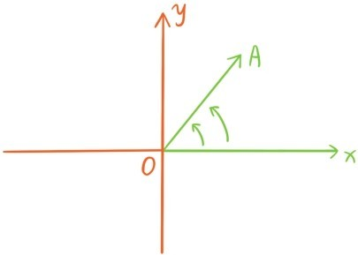
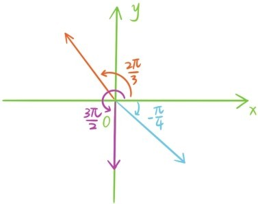
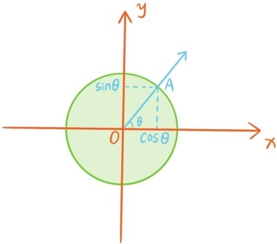
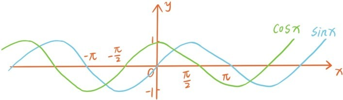
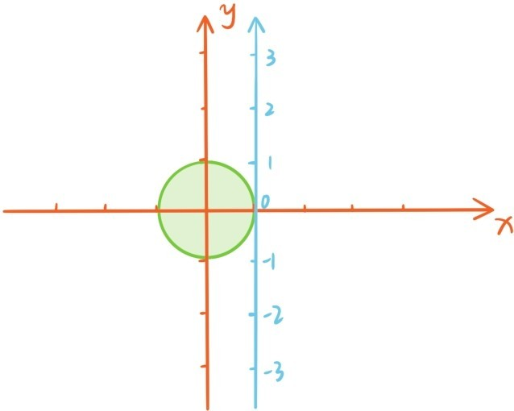

注意，上一节讲的余弦定理BC2=AC2+AB2-2AB·ACcosA只能应用于求三角形中锐角的对边。当∠A从锐角渐渐逼近为直角时，情况如何呢？根据勾股定理，BC2=AC2+AB2，为了使得余弦定理依然成立，似乎应该有cos90°等于0。实际上，在直角三角形中，一个锐角如果无限逼近90°，邻边与斜边的比值确实无限逼近0。
∠A逐渐逼近0的时候呢？这时BC2=(AB-AC)2，为了使得余弦定理继续成立，似乎应该有cos0°等于1。实际上，直角三角形中的一个锐角如果无限逼近0°，邻边与斜边的比值确实无限逼近1。
如果∠A是钝角，余弦定理还成立吗？该如何定义钝角的余弦值？当AB，AC保持不变，∠A从直角变成钝角时，直觉告诉我们BC应该也是逐渐变长，为了使得余弦定理成立，钝角的余弦值似乎要定义为负数。最后，当∠A从钝角渐渐逼近为180°时，BC=AB+AC，为了让余弦定理成立，是不是该有cos180°=-1？
接下来，将拓展角的概念，并对所有角定义正弦函数和余弦函数，使得正弦定理、余弦定理对任意三角形都成立。
首先，先用另一种方式来衡量角。之前定义的正弦函数和余弦函数，是关于角度的函数，输入的量是角度。但是数轴和平面坐标系却是联系数与长度。为了更好地定义正弦函数和余弦函数，我们希望将角度换算成长度。具体的做法是将360°换算成单位圆（半径为1）的周长，就是2π，因此180°就换算成单位半圆的弧长，就是π，直角换算成。把新的量称为角的弧度，原先的量称为角的角度。例如30°角的弧度就是 ，45°角的弧度就是。一般地，单位圆中圆心角的弧度就是圆心角所对的弧长。这里可能有人会问：
问题57：为什么要用这种新的方法衡量角度呢？
之后我们定义任意角的正弦函数与余弦函数时，你会发现，利用这种新的衡量角度的方法，正弦函数与余弦函数可以有一个非常简洁的几何解释。采用这种新的衡量方法还有更深层次的原因，涉及高等数学中的欧拉公式，这已经远远超出了本书的范围。
现在开始拓展角的概念。假设A是不同于原点O的任何一个点，该用什么样的数据描述从O到A的方向呢？

从原点O出发，x轴正方向的射线定为起始边，OA方向角就是定义为这条起始边绕原点O旋转到射线OA所形成的角。注意在平面上，旋转有两个方向：顺时针和逆时针。规定逆时针旋转形成的角为正，顺时针旋转形成的角为负。例如逆时针旋转60°或者形成的角就是+60°或者，顺时针旋转45°或者形成的角就是-45°或者。角还可以相加减，90°-120°表示逆时针旋转90°后再顺时针旋转120°，这和逆时针旋转30°的效果一样，所以90°-120°=-30°，即。
从原点出发的每个方向都可以由起始边绕原点O旋转得到，旋转的角称为这个方向的角，下图中3个方向的角分别是。

因为任何方向旋转2π后都与自身重合，所以角加减2π的倍数时，方向不会改变，所以上面这3个方向的角还可以分别是，。

接下来要定义任意角的正弦函数和余弦函数。如上图所示，角等于θ的射线和单位圆（以原点O为圆心）会恰好相交于一点A，θ的余弦函数cosθ和正弦函数sinθ就是分别定义为点A的横坐标和纵坐标，(cosθ，sinθ)就是点A。注意，当0<θ<时，这种新的定义和上一节关于锐角正弦函数和余弦函数的定义完全吻合。根据这个新定义，当θ为0，，π时，cosθ的值分别是1，0，-1，这与我们在这一节开头的期望也是相符合的。因为点A(cosθ，sinθ)到原点的距离等于1，根据平面两点的距离公式，之前的等式
sin2θ+cos2θ=1
对所有角度θ都成立。
那么如何说明之前的另一个等式
对所有角度θ都成立呢？注意这个等式可以写成
这等价于是说点(cosθ，sinθ)和点是关于直线x-y=0对称的，那么为什么会对称呢？因为射线θ和射线-θ是关于直线x-y=0对称的。同样的道理，因为射线θ和射线-θ是关于x轴对称的，所以
因为射线θ和射线π-θ是关于y轴对称的，所以
射线θ绕原点旋转180°后变成射线π+θ，所以
θ和2π+θ表示同一条射线，所以
若对于任何实数x，都有f(x)=f(x+r)，我们称非零实数r是函数y=f(x)的周期。根据这个定义，2π同时是余弦函数cosθ和正弦函数sinθ的周期。利用以上这些等式，就可以得出更多三角函数值，例如
下图给出正弦函数和余弦函数的图象：

正弦函数和余弦函数还有一种很有趣的几何解释，下图中的蓝色数轴指向y轴正方向，并与单位圆相切于点(1,0)。接下来让蓝色数轴保持点(1,0)不动，并不停地缠绕在单位圆上，这时蓝色数轴上的任何点θ，都变成单位圆上的点，坐标正是(cosθ，sinθ)。

提问时间
6.3.1 请将角度150°，135°，20°换算成弧度。
6.3.2 请将弧度换算成角度。
6.3.3 求，和。
6.3.4 函数y=sinx+cosx的最大值为多少，在x取哪些值时，函数取得最大值。（提示：利用基本不等式）
6.3.5 函数y=sinx·cosx的最大值为多少，在x取哪些值时，函数取得最大值。（提示：利用基本不等式）